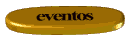
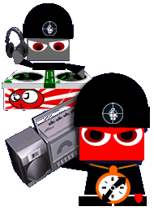

 
Frost Children
·
SISTER
Ad stats
Total viewed
86
Total served
108
Total clicked
22
Music clicks
9
Viewed — 86
Clicked — 22
Music — 9
Music clicks are
9
out of
108
total served ads — that's
8.33%
of all ads served.
YUNG LEAN
·
Yung Lean - Marble Phone (ft. Kreayshawn)